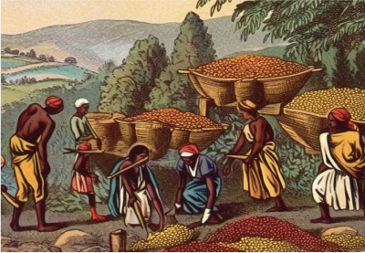

As origens do café
A origem dessa bebida tão presente em nossas vidas data do século VI, quando na antiga Abissínia (atual Etiópia) um pastor que levava suas cabras para pastar notou em uma das noites que elas estavam mais agitadas e saltitantes do que o normal. Como na noite seguinte as cabras apresentaram o mesmo comportamento, o pastor recorreu a um monge que os acompanhou, para ver se era algo sobrenatural. O monge então observou que as cabras estavam comendo frutinhos vermelhos de um arbusto e levou algumas folhas e frutos para o mosteiro. Enquanto isso, o pastor provou alguns frutos e sentiu a mesma excitação de suas cabras, indo juntar-se a elas. No mosteiro fizeram uma infusão com as folhas e os frutos, mas o sabor era tão amargo e desagradável que eles atiraram ao fogo, surgindo um aroma extasiante. Foi feita então uma nova infusão e os monges beberam e ficaram a madrugada inteira recitando escrituras. Assim, foi descoberta essa bebida mágica chamada café, capaz de acabar com o cansaço e estimular o cérebro. O café já era muito apreciado no século XV na região da Etiópia, quando cruzou o Mar Vermelho e atingiu o Iêmen, ganhando interesse do governo e agricultores, conquistando o mundo árabe. Naquele tempo a bebida era preparada da seguinte forma: a água era fervida em uma chaleira própria, o pó de café era adicionado e a mistura fervia por mais um tempo para perder o sabor desagradável e devia-se bebê-la rapidamente. Algumas pessoas adicionavam açúcar, canela e cravo-da-índia. Essa bebida era chamada cahue ou café. A espécie da planta ficou conhecida como Coffea arábica por ter se adaptado muito bem na Arábia. No final do século XIX outras espécies passaram a ser cultivadas como a Coffea robusta.
No Brasil, o café chegou no século XVIII e rapidamente se tornou um dos principais produtos de exportação, influenciando a economia, a cultura e até a arquitetura do país. Hoje, o Brasil é o maior produtor e exportador mundial de café.
O café no mundo
O café é atualmente uma das bebidas mais consumidas do planeta, presente em diferentes culturas e tradições. Seja em uma xícara simples ou em sofisticadas cafeterias, o café une pessoas, inspira conversas e faz parte do cotidiano de milhões de pessoas.